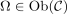
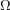
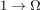
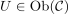
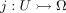
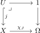

subobject classifier
1. Definition
Let  be a category and
be a category and  a terminal object and
a terminal object and

be an object. Then
is said to be a subobject classifier, if- there exists a morphism

such tht - for each object

and monomorphism
there exists a unique morphism - such that following diagram is a pullback
